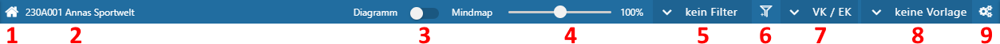
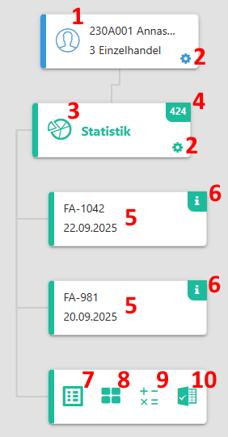

Die View 360 besteht aus den Bereichen "Kopfleiste" und "Objektübersicht".
Kopfleiste

In der Kopfleiste stehen die allgemeinen Steuerungselemente der View 360 zur Verfügung.
Ø Historienauswahl (1)
Durch Anwahl des Icons in einem Widget wird das entsprechende Objekt in den Fokus gelegt, d.h. wird zum neuen Ausgangsobjekt. Über den Button der Historienauswahl kann zwischen den einzelnen gewählten Objekten navigiert werden.
Hinweis
Die Anzahl der Einträge in der Historie kann in den Einstellungen definiert werden.
Ø Aktuelles Objekt (2)
An dieser Stelle wird das aktuelle Objekt (d.h. das Ausgangsobjekt) angezeigt.
Ø Diagramm / Mindmap (3)
An dieser Stelle kann die Ansicht der View 360 gewählt werden. Das Diagramm zeigt dabei die Verbindungen der Objekte vertikal an, die Mindmap hingegen horizontal.
Ø Zoom (4)
In der View 360 steht eine Zoom-Funktion in Form eines Schiebereglers zur Verfügung. Mit dessen Hilfe kann der Inhalt der View verkleinert und vergrößert werden kann. Der aktuelle Faktor wird neben dem Schieberegler angezeigt.
Hinweis
Neben der Bedienung des Schiebereglers kann der Zoom-Faktor auch per Tastenkombinationen und Mausrad erfolgen.
ü STRG + Mausrad nach vorne => vergrößern
ü STRG + Mausrad nach hinten => verkleinern
Hinweis 2
Die View 360 wird immer mit dem Zoom-Faktor 100% gestartet, wobei sich die Größe der Elemente in der Objektübersicht anhand des Inhalt dynamisch errechnet.
Ø Filterauswahl (5)
Mit Hilfe einer Auswahlliste kann der Filter ausgewählt werden.
Hinweis
Handelt es sich um einen Filter mit "{}" (z.B. "Aktuelle Monat {a}"), so handelt es sich um einen öffentlichen Filter.
Ø Filter bearbeiten (6)
Durch Anwahl dieses Buttons wird das Filter-Fenster geöffnet. In diesem können bestehende Filter überarbeitet oder neue erstellt werden.
Ø Verkauf / Einkauf (7)
An dieser Stelle kann über eine Auswahlliste definiert werden, ob Belege des Typs "Verkauf", "Einkauf" oder "Verkauf / Einkauf" in der View 360 berücksichtigt werden sollen.
Ø Vorlagenauswahl (8)
Mit Hilfe einer Auswahlliste kann die Vorlage ausgewählt werden.
Hinweis
Handelt es sich um eine Vorlage mit "{}" (z.B. "Kurzübersicht {a}"), so handelt es sich um eine öffentliche Vorlage.
Ø Einstellungen (9)
Durch Anwahl dieses Buttons werden die Einstellungen der View 360 geöffnet. Dort können individuelle Einstellung für die Anzeige und das Programmverhalten getroffenen werden.
Objektübersicht

Ø Ausgangsobjekt (1)
Dieses Objekt ist der Ausgangspunkt der View 360, d.h. es werden nachfolgende alle Verbindungen anzeigt, die mit diesem Objekt zu tun haben.
Hinweis
Bei Anwahl des Objekts mit der rechten Maustaste stehen die Standard-DrillDown-Funktionen zur Verfügung. Über die linke Maustaste wird der zuletzt gewählte DrillDown ausgeführt.
Ø Widget-Einstellungen (2)
Durch Anwahl dieses Icons gelangt man in die Widget-Einstellungen des jeweiligen Objekts. Dort kann der Inhalt der Kachel und der Ausgaben Tabelle und "Excel" individuell hinterlegt werden.
Ø Objektgruppen (3)
Oberhalb der verknüpften Objekte steht jeweils die Objektgruppe, welche die Verknüpfungen je Typ zusammenfasst.
Hinweis
Welche Objektgruppen dargestellt werden sollen, kann in den Einstellungen definiert werden.
Ø Anzahl Datensätze (4)
An dieser Stelle wird die Anzahl der Datensätze innerhalb der Gruppe dargestellt. Durch Anwahl der Zahl erfolgt die Anzeige aller Datensätze in Form einer Tabelle.
Ø verknüpfte Objekte (5)
Unterhalb der Objektgruppen werden die einzelnen (mit dem Ausgangsobjekt verknüpften) Objekte dargestellt.
Hinweis
Ø neues Ausgangsobjekt (6)
Durch Anwahl des Icons in einem Widget wird das entsprechende Objekt in den Fokus gelegt und zum neuen Ausgangsobjekt.
Ø Tabelle (7)
Durch Anwahl des Buttons "Tabelle" werden alle Datensätze der Gruppe in einer Tabelle im rechten Bereich des Fensters dargestellt. Der Aufbau der Tabelle wird in den Widget-Einstellungen definiert.
Hinweis
Weitere Einstellungen zur Tabelle können in den Einstellungen der View 360 getroffen werden.
Ø Power Report (8)
Durch Drücken des Buttons Power Report werden die Daten der Gruppe grafisch dargestellt. Die Ausgabe ist individuell anpassbar und erfolgt in der Form von "Widgets", die unterschiedlichste Darstellungen ermöglichen.
Ø WinCalc (9)
Mit Hilfe dieses Buttons werden die Daten der Gruppe an das Tabellenkalkulationsprogramm WinCalc übergeben, wobei die einzelnen Spalte in den Widget-Einstellungen definiert werden.
Ø Ausgabe Excel (10)
Durch Anwahl des Buttons "Ausgabe Excel" werden alle Datensätze der Gruppe an Microsoft Excel übergeben, wobei die einzelnen Spalte in den Widget-Einstellungen definiert werden.